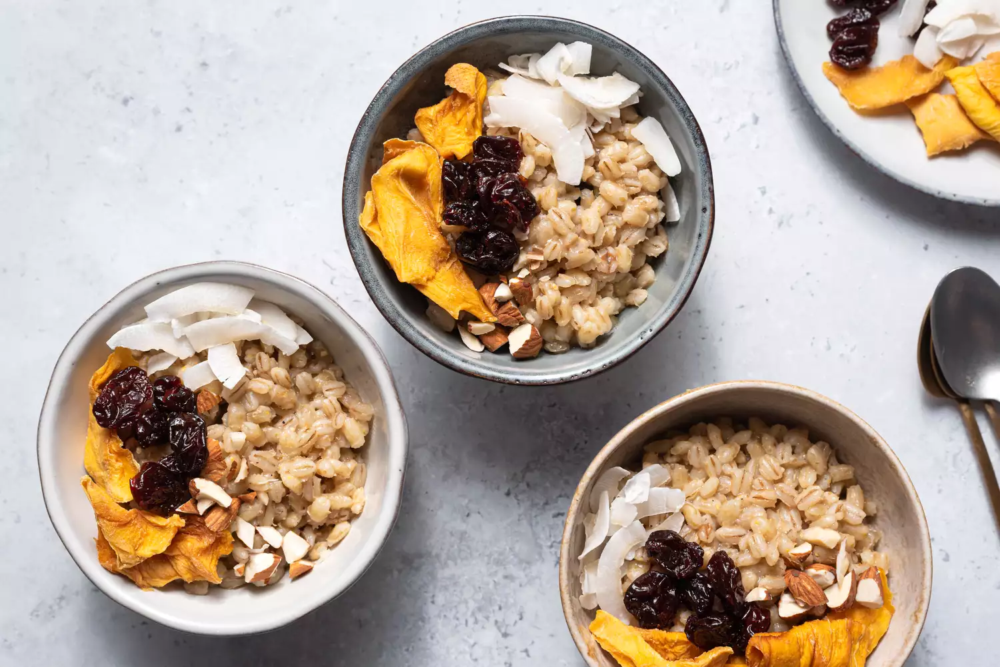

Travaller, first recipe is - porridge!

Ingredients:
- 1/2 cup whole barley
- 4 1/4 cups water, divided
- (3-inch) cinnamon stick
- Sugar, or honey, to taste
- Milk, for serving
- Dried fruit, fresh fruit, nuts, for optional garnish
Steps to Make It:
- Gather the ingredients.
- Soak the barley in 3/4 cup water for 1 hour.
- At the end of the hour, add the remaining 3 1/2 cups of water to a saucepan along with
the cinnamon stick, cover the pot and bring it to a boil.
- Add the soaked barley as well as the soaking liquid to the boiling water and cook on
medium heat for 30 to 40 minutes or until the barley is soft.
- Remove the pot from the heat and sweeten with sugar and milk to taste, stirring until
fully incorporated. Serve hot with toppings such as fruit and nuts, if desired.